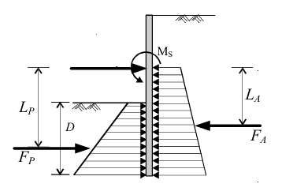
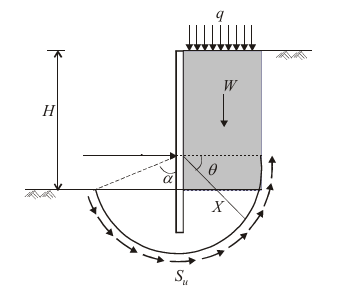
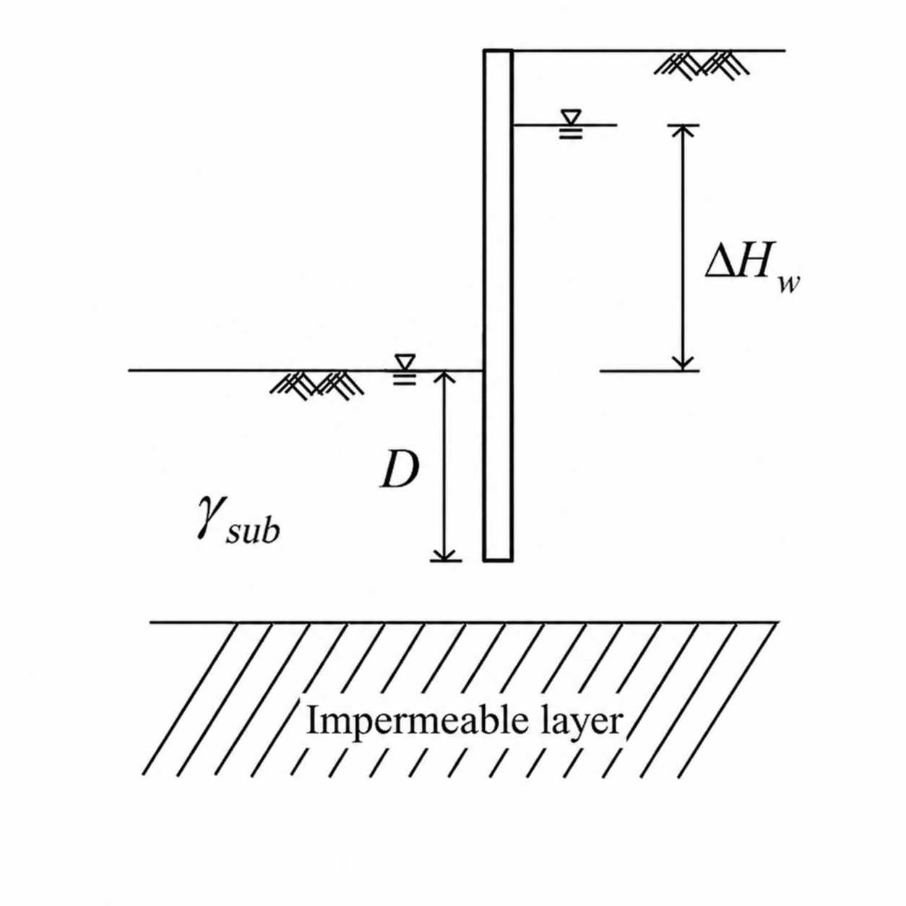
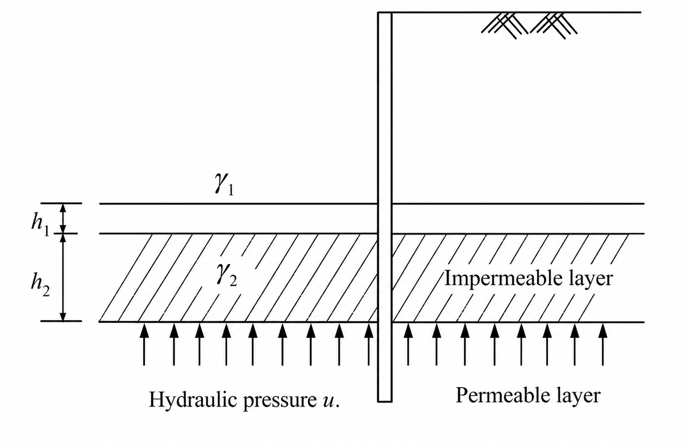

goStable - Stability Checks
Read the four summary cards first, then open the detailed tables only when you need to trace a value.
Lateral
-
FpLp ≥ FaLa
FpLp = -
FaLa = -
with c′/FS. φ′/FS
Basal Heave
-
FS = -
FS = XΣ(ΔLτf) / (W·X/2)
Sand Boiling
-
FS1 = -
FS1 = 2γ′D / (γwΔHw)
FS2 = -
FS2 = γ′(ΔHw + 2D) / (γwΔHw)
Hydraulic Uplift
-
FS = -
FS = Weight / Uw
Global inputs
| Excavation depth (m) | Wall toe depth (m) | ||
| Lowest support depth (m) | Excavation width B (m) | ||
| Retained-side water level (m) | Excavation-side water level (m) | ||
| Surcharge q (tf/m2) |
Water source: -. Each side uses the last WAT command found up to the deepest excavation stage; missing sides use defaults.
FS factors
| Lateral c′/φ′ FS | |
| Basal Heave FS | |
| Sand Boiling FS1 | |
| Sand Boiling FS2 | |
| Hydraulic Uplift FS |
Soil Types
| Soil type | z bottom | γt | γsub | c′ | φ′ | Su | Ka | Kp |
|---|
Lateral Earth Pressure Equilibrium
The result block and sketch stay above; the pressure rows below are for tracing where the moment balance comes from.
| Check Item | F | L | F*L |
|---|---|---|---|
| Active(retained side earth pressure) | - tf/m | - m | - tf-m/m |
| Passive(excavation side earth pressure) | - tf/m | - m | - tf-m/m |
| Water pressure contribution | - tf/m | - m | - tf-m/m |
| Moment Equilibrium | Fp*Lp = - ≥ Fa*La = - tf-m/m | - | |

Active Side Earth Pressure
Detail Table| Layer | z range | Soil type | Ka | σv bot | u bot | σa top | σa bot | Force | Arm | Moment |
|---|
Passive Side Earth Pressure
Detail Table| Layer | z range | Soil type | Kp | σv bot | u bot | σp top | σp bot | Force | Arm | Moment |
|---|
Water Pressure Contribution
Detail Table| Side | z range | Uret top | Uret bot | Uexc top | Uexc bot | Unet top | Unet bot | Force | Arm | Moment |
|---|
Lateral uses reduced strength only here: cd = c′/FS and φd = atan(tanφ′/FS). Active Ka is recalculated by Rankine; passive Kp is recalculated by Caquot-Kerisel using Dp.
Basal Heave
Top-left is the decision area. The diagram explains the mechanism. The long tables below show each arc segment contribution.
| Slip radius X (m) |
| Check Item | Design | Allowable | Result |
|---|---|---|---|
| Basal heave stability | Mr = - tf-m/m | ≥ Md = - tf-m/m | - |
| Computed FS | - | ≥ - | - |

Basal Heave Calculation
Quick Totals| Outside arc shear sum | - t/m |
| Inside arc shear sum | - t/m |
| Arc shear sum, integral(tau dL) | - t/m |
| Driving weight W | - t/m |
| Slip radius X | - m |
Outside Arc Segments
Detail Table| Layer | z from | z to | Soil type | Ka | θc | Δθ | ΔL | τf | ΔL·τf | Moment |
|---|
Inside Arc Segments
Detail Table| Layer | z from | z to | Soil type | Kp | θc | Δθ | ΔL | τf | ΔL·τf | Moment |
|---|
Uses a circular basal-heave mechanism. The slip radius X and surcharge q are editable here; Su is read from the soil table.
Sand Boiling
Keep the FS checks in view first; the formula block below is only for verification.
| Penetration depth, D (m) | |
| Submerged unit weight, γ′ (tf/m3) | |
| Water unit weight, γw (tf/m3) | |
| Water head difference, ΔHw (m) |
| Check Item | Design | Allowable | Result |
|---|---|---|---|
| Sand boiling FS1 | - | ≥ - | - |
| Sand boiling FS2 | - | ≥ - | - |

FS1 = 2γ′D / (γwΔHw); FS2 = γ′(ΔHw + 2D) / (γwΔHw).
Hydraulic Uplift
Automatically checks each impermeable-over-permeable interface for every excavation stage. Interfaces above the wall toe use excavation-side water pressure; deeper interfaces use retained-side groundwater head.
| Impermeable layer top depth (m) | |
| Water pressure at permeable layer top, Uw (tf/m2) |
| Check Item | Design | Allowable | Result |
|---|---|---|---|
| Hydraulic uplift | Resisting = - tf/m2 | ≥ Uw*FS = - tf/m2 | - |
| Computed FS | - | ≥ - | - |

FS = Weight / Uw
Hydraulic Uplift Calculation
| Impermeable top depth | - m |
| Uw | - tf/m2 |
| Computed FS | Weight / Uw |
| Stage | Interface (m) | Layer pair | Exc. (m) | Water (m) | Weight | Uw | FS | Result | Ureq |
|---|---|---|---|---|---|---|---|---|---|
| - | |||||||||